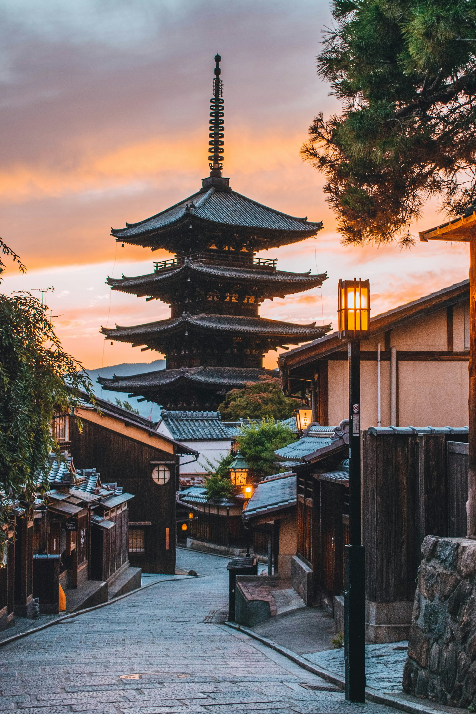
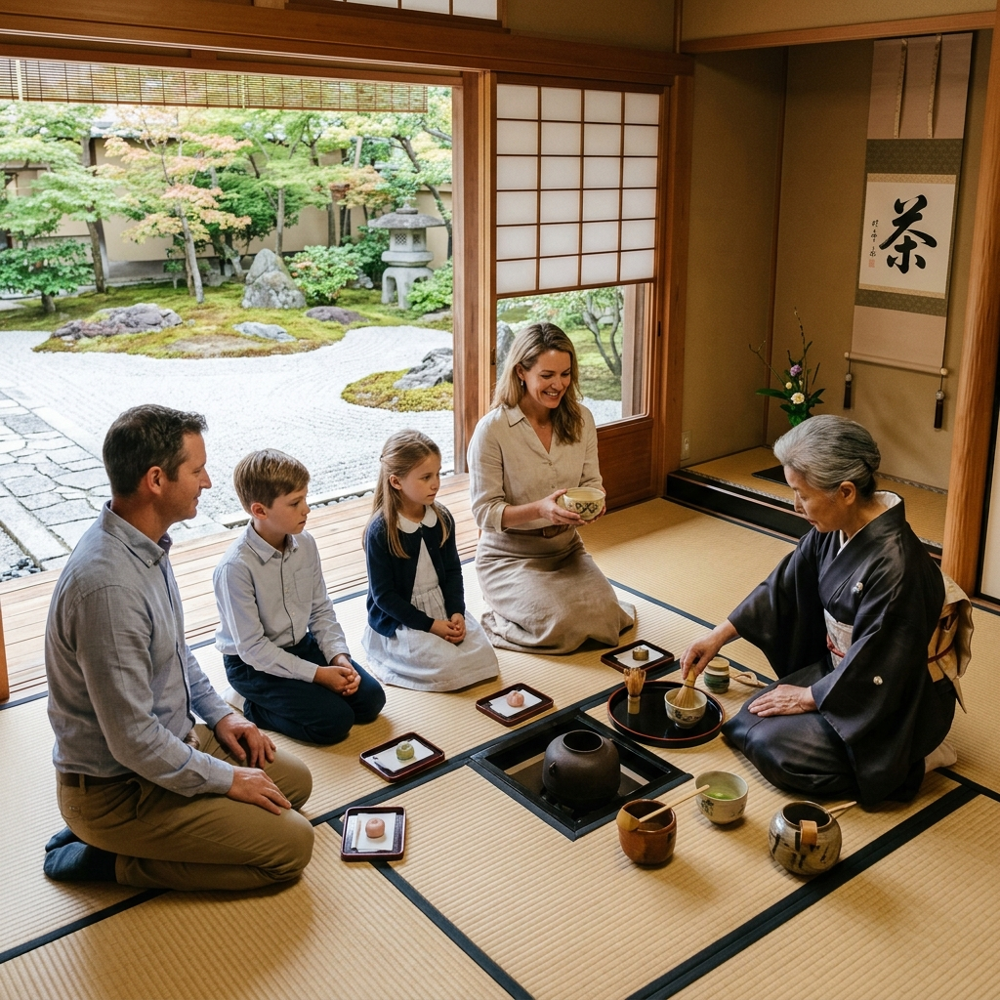
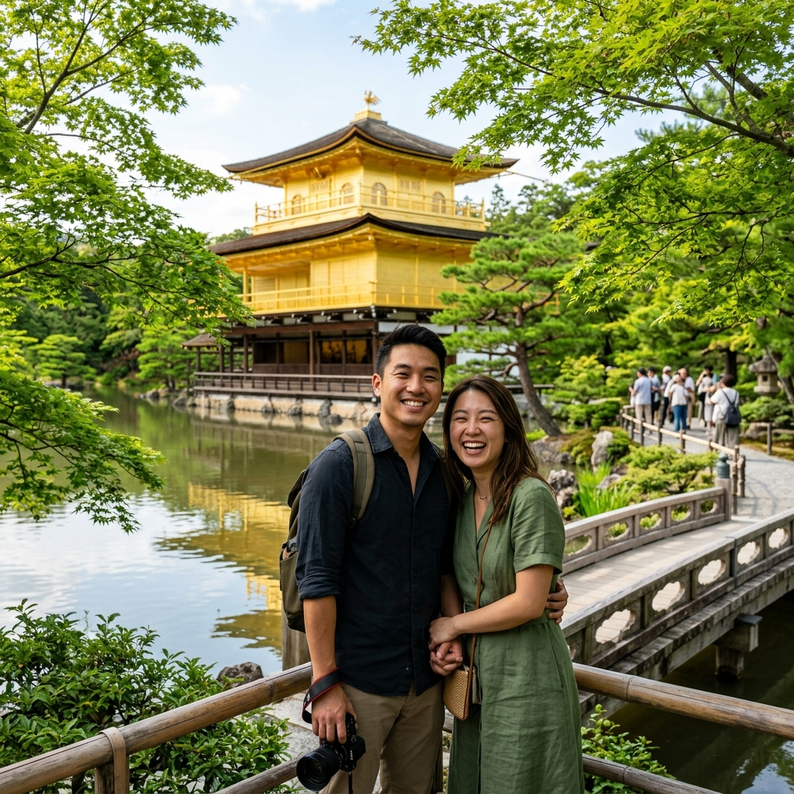

Desenhamos jornadas personalizadas de alto padrão, combinando sofisticação, curadoria de luxo e suporte completo em português para viajantes exigentes.
"Inspirados no refinamento estético e na harmonia do período clássico japonês (Heian), nós antecipamos cada necessidade da sua viagem antes mesmo que você a sinta."
Não acreditamos em roteiros prontos, excursões impessoais ou horários engessados. A Heian Tour opera sob um modelo boutique de altíssima curadoria. Cada rota é desenhada artesanalmente para se ajustar ao seu ritmo de vida, preferências e paixões. Cuidamos de toda a complexidade logística, reservas nos ryokans mais exclusivos e de difícil acesso do país, e oferecemos acompanhamento de guias em português altamente instruídos para que você vivencie a alma do Japão com total tranquilidade.
Itinerários totalmente adaptados aos seus interesses, equilibrando noites em metrópoles tecnológicas, caminhadas contemplativas por florestas sagradas e visitas a ateliês de artesãos tradicionais.
Acesso e curadoria nas estadias mais prestigiadas. Reservamos vilas de luxo e Ryokans tradicionais centenários com águas termais privativas e serviço impecável de mordomia Kaiseki.
Reservas em restaurantes com estrelas Michelin de acesso restrito, cerimônia do chá particular conduzida por mestres budistas e transfers privativos em veículos executivos de alto padrão.
Conheça alguns dos conceitos que desenhamos para nossos clientes. Cada um desses roteiros serve como base inspiracional e é inteiramente customizado para a sua viagem.

Uma imersão refinada conectando Tokyo moderna, uma estadia dos sonhos em Ryokan de luxo com vista para o Monte Fuji em Hakone, finalizando nos templos e distritos de gueixas em Kyoto.

Explore as históricas casas de palha em Shirakawa-go, caminhe pelas ruas preservadas do período Edo em Takayama, hospede-se em templos sagrados em Koyasan e faça rituais termais em Kinosaki Onsen.

Uma jornada que mescla os sabores mais exclusivos de mercados e restaurantes de Tokyo e Osaka, jantares com a verdadeira carne de Kobe, e a visita à espetacular ilha de arte contemporânea de Naoshima.
A satisfação de quem viajou sob os cuidados da Heian Tour. Nossos clientes vivenciam momentos únicos planejados exclusivamente para eles.
Forneça as preferências de viagem iniciais abaixo. Nosso concierge de luxo usará esses dados para desenhar o conceito inicial da sua jornada no Japão.